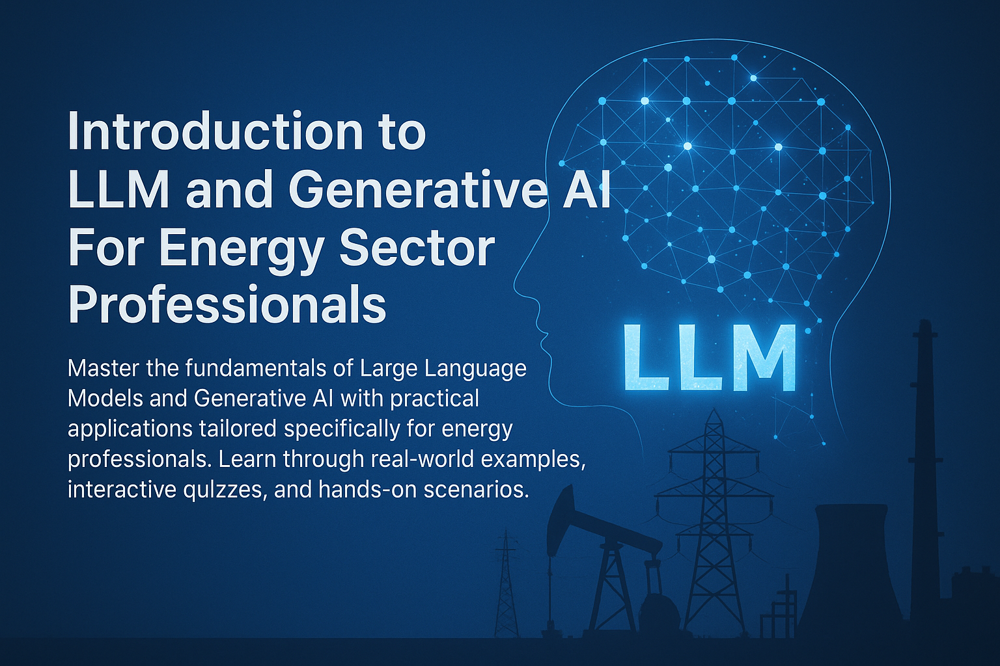

AI, Machine Learning, and Generative AI: Interactive Learning Experience
üìç Your Learning Progress
Step 1: Course Introduction & Learning Objectives
1
üéØ Welcome & Learning Objectives
üí° Learning Objectives
By the end of this module, you'll understand the fundamental differences between AI, ML, and Generative AI, and recognize how these technologies are already being used in energy sector applications.
Welcome to this comprehensive course! Over the next 42 minutes, we'll demystify some of the most transformative technologies in today's energy sector: Artificial Intelligence, Machine Learning, and Generative AI.
You'll learn not just what these technologies are, but how they're already revolutionizing energy operations and how you can leverage them in your daily work.

üöÄ Your journey into AI for energy professionals starts here! This interactive course will transform how you think about and use AI technologies.
üîç What Makes This Training Different?
Interactive Learning: Content is revealed step-by-step, preventing information overload. Each concept builds naturally on the previous one, with immediate feedback and visual reinforcement to ensure solid understanding before moving forward.
2
ü§ñ Artificial Intelligence - The Foundation
What is AI? AI is the broad field of making computers capable of performing tasks that typically require human intelligence - understanding language, recognizing patterns, making decisions, and solving complex problems.
üéØ Think of it like this
AI is like having a digital assistant that can process vast amounts of information and help you make informed decisions, much faster than humanly possible.
üîç Figure 1.1: Relationship between AI, Machine Learning, and Deep Learning. This diagram shows how these technologies build upon each other, with AI being the broadest concept.
⚡ Energy Sector Examples:
Predictive Maintenance: AI systems analyze sensor data from wind turbines to predict when components might fail, preventing costly downtime
Grid Optimization: AI manages electricity distribution across smart grids, automatically balancing supply and demand in real-time
Energy Trading: AI algorithms analyze market conditions, weather patterns, and demand forecasts to optimize energy trading decisions
Site Selection: AI processes satellite imagery, weather data, and geographical information to identify optimal locations for solar farms or wind installations
üåü Key Takeaway
AI is already working behind the scenes in many energy applications you might use daily. It's not futuristic - it's here now, making energy systems smarter and more efficient.
3
ü߆ Machine Learning - How Computers Learn
What is Machine Learning? Machine Learning is a subset of AI. It's about teaching computers to learn from data without being explicitly programmed for every single task. Instead of giving a computer specific rules, you give it lots of examples, and it figures out the rules itself.
üéØ Simple Cooking Analogy
Think of machine learning like learning to cook your grandmother's famous recipe. Instead of getting a detailed recipe with exact measurements, you watch her cook the dish 100 times, noting what ingredients she uses, how long she cooks it, and what the final result looks like. Eventually, you learn to recognize the patterns - when the onions are perfectly golden, how the sauce should smell, what texture means it's ready. You can then cook the dish yourself, even adapting it for different occasions. That's exactly how machine learning works - it learns patterns from lots of examples.
üîç Figure 1.2: Machine Learning Process - A clear, step-by-step view showing how machine learning works: data goes in, the system learns patterns, and predictions come out. This simplified diagram illustrates the core concept without overwhelming technical details.
⚡ Energy Sector Applications:
Demand Forecasting: ML analyzes historical consumption data, weather patterns, and economic indicators to predict future energy demand
Equipment Health Monitoring: ML models learn normal operating patterns of turbines, transformers, and other equipment to detect anomalies that signal potential failures
Energy Price Prediction: ML processes market data, supply/demand trends, and external factors to forecast energy prices
Renewable Energy Output Forecasting: ML predicts solar and wind energy generation based on weather forecasts and historical performance data
Load Balancing: ML optimizes energy distribution across the grid by learning consumption patterns and automatically adjusting supply
üí° Real-World Example
Predictive Maintenance at Wind Farms: A wind farm operator uses ML to analyze vibration data, temperature readings, and power output from 100 turbines over 5 years. The ML system learns to identify patterns that occur 2-3 weeks before a gearbox failure, allowing maintenance teams to replace components during scheduled downtime rather than dealing with emergency repairs that could cost 10x more.
4
✨ Generative AI - AI That Creates
What is Generative AI? Generative AI is a special kind of AI that creates new content. Unlike traditional AI that might analyze existing data or make predictions, Generative AI can produce original text, images, audio, video, or even code.
üéØ Think of it like this
A skilled engineer who has studied thousands of project reports and can now draft new ones in the appropriate style and format, or an experienced consultant who has analyzed countless energy market reports and can generate new insights and recommendations.
üîç Figure 1.3: Generative AI in Action - Modern chatbots powered by Generative AI can create comprehensive, professional content tailored to energy sector needs.
Technical Documentation: Generate operation and maintenance manuals, safety procedures, and training materials
Proposal Writing: Draft project proposals, grant applications, and stakeholder communications
Data Analysis Summaries: Convert complex technical data into executive-friendly reports and presentations
Risk Assessment Documents: Generate comprehensive risk analysis reports for new energy projects
Regulatory Correspondence: Draft responses to regulatory inquiries and compliance documentation
üåü Why This Matters for You
Generative AI, especially in the form of Large Language Models (LLMs), is what powers the advanced chatbots like ChatGPT, Gemini, and Claude that we'll discuss. These tools can directly assist you in generating reports, summarizing documents, brainstorming ideas, and much more - all tailored to energy sector needs.
üí° Practical Example
Environmental Impact Assessment: An energy project manager needs to draft an environmental impact section for a new offshore wind farm. Instead of starting from scratch, they provide the AI with key project details (location, capacity, timeline) and ask it to generate a comprehensive environmental impact assessment. The AI produces a well-structured document covering marine ecosystem impacts, noise considerations, visual impact, and mitigation measures - providing an excellent first draft that the manager can then refine with specific technical details.
5
üéØ Key Takeaways & Summary
ü߆ What You've Learned
You now understand the fundamental differences between AI, Machine Learning, and Generative AI, and can identify real-world applications in the energy sector.
•
Computers learn patterns without explicit programming
•
Powers predictive and analytical features
•
Essential for energy sector optimization
✨ Generative AI
•
Creates new, original content
•
Powers modern chatbots and AI assistants
•
Can generate text, images, code, and more
•
Most relevant for your daily work applications
üéâ Congratulations!
You've successfully completed the foundational concepts! You're now ready to test your knowledge with an interactive quiz and then move on to understanding how Large Language Models work in detail.
6
ü߆ Interactive Knowledge Check
üéØ Test Your Understanding
Complete this interactive quiz to reinforce your learning and ensure you're ready for Module 2. Each question builds on the concepts you've just learned.
Question 1 of 4
Which of the following best describes the relationship between AI, Machine Learning, and Generative AI?
They are three completely separate and unrelated technologies
Machine Learning is a subset of AI, and Generative AI is a type of AI that creates content
Generative AI is the broadest concept, containing both AI and Machine Learning
They are different names for the same technology
Correct! Machine Learning is indeed a subset of AI (focused on learning from data), and Generative AI is a specialized type of AI that creates new content. Think of it as nested concepts: AI is the broadest, ML is within AI, and Generative AI is a specific application area.
Question 2 of 4
In the energy sector, which of these is the BEST example of Machine Learning in action?
Using a calculator to compute energy costs
Analyzing 5 years of wind turbine sensor data to predict equipment failures 2-3 weeks in advance
Manually reading electricity meters
Using Excel to create energy consumption charts
Excellent! This is a perfect example of Machine Learning - the system learns patterns from historical data (5 years of sensor readings) to make predictions (equipment failures). The key is that it learns patterns automatically rather than being explicitly programmed with rules.
Question 3 of 4
Which of these tasks would be MOST suitable for Generative AI in an energy company?
Monitoring real-time electricity grid performance
Calculating the exact voltage in power lines
Drafting an environmental impact assessment report for a new solar farm project
Measuring wind speed at turbine locations
Perfect! Generative AI excels at creating new content like reports, documents, and written materials. Drafting an environmental impact assessment involves generating original text based on project parameters - exactly what Generative AI does best. The other options involve measurement, monitoring, or calculation rather than content creation.
Question 4 of 4
What is the main advantage of using AI tools in energy sector work?
They completely replace the need for human expertise and judgment
They can process vast amounts of information quickly and help make informed decisions faster than humanly possible
They are always 100% accurate and never make mistakes
They eliminate the need for data verification and quality control
Exactly right! AI tools are powerful assistants that can process and analyze large amounts of data much faster than humans, helping us make better-informed decisions. However, they don't replace human expertise, aren't always perfect, and still require human oversight and verification - which we'll explore more in later modules.
0/4
Great job completing the quiz!
You're ready to move on to Module 2, where we'll dive deeper into Large Language Models.